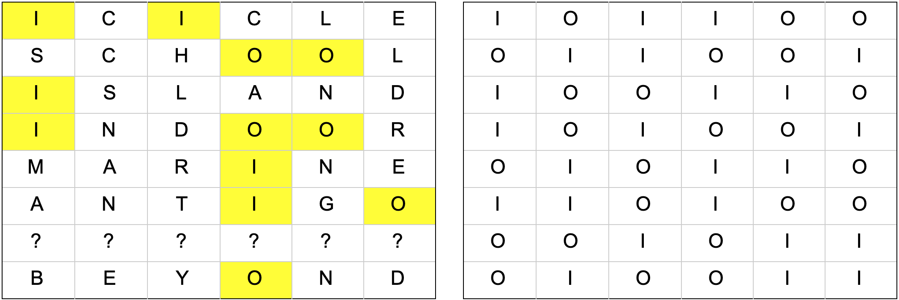

Solution: The Meta Puzzle
Answer: EXTRACTION
Written by Anderson Wang, Colin Lu, and Lennart Jansson
At first glance, the puzzle consists of 8 distinct metapuzzles. As solvers make progress on the metapuzzles, they’ll find that some answers seem to be missing. In fact, in each case, one of the “feeder answers” for the metapuzzle is omitted. However, every metapuzzle is still solvable without the missing answer, and in every case the missing answer is uniquely “backsolvable”.
The missing feeder answers to each of the puzzles, as well as the meta puzzle answers, in order of presentation, are:
| “Backsolved” feeder answer | Meta answer |
|---|---|
| BLACK COW | REDUCE |
| GASOLINE | HALOGENS |
| FOVEAL VISION | ENIAC |
| IVES | REMARRIAGE |
| ASSORT | ROSINESS |
| DIGERATI | ITSY BITSY SPIDER |
| CUBANO | NORWAY |
| HUCKSTER | GINSBURG |
Reading down, the meta answers spell RHERRING (with the first answer starting with RED), which tells us not to use them further. The backsolved answers together form a final metapuzzle, once again with an answer missing.
We notice that the backsolved answers start with distinct letters from A to I, with E conspicuously absent, suggesting that once again a single answer is missing. Ordering these answers alphabetically, we can read the last letters:
ASSORT
BLACK COW
CUBANO
DIGERATI
?
FOVEAL VISION
GASOLINE
HUCKSTER
IVES
This spells TWO I?NERS, which completes to the clue phrase TWO INNERS.
Taking the two middle letters of each of these answers, each of which has an even length, gives bigrams SO, CK, BA, ER, ??, LV, OL, KS, and VE. These bigrams can be rearranged to form a chain where the second letter in one bigram is the first letter of the next and they can be uniquely combined to make the word BACKSOLVER, the appropriate answer to the meta, but not to this puzzle! Much like how the backsolved answers were used instead of the meta answers with the rest of the puzzle, we need to do the same thing and backsolve this final one.
The missing middle bigram is AC, so the constraints on the missing answer are: 1) It begins with an E, 2) It ends with an N, and 3) It has even length and contains AC directly in the middle. The most common (and by far the most appropriate) word or phrase that satisfies these conditions is EXTRACTION, the final answer.
Component Meta Solutions
REDUCE meta
The shell depicts some example “sets” and “runs”, and shows several sets of 10 cards. From this, we can gather that the cards represent a rummy game. Furthermore, as one looks at the sets of cards more closely, it can be seen that these are three new cards added between each consecutive hand of cards, while three old cards are removed. Then, a natural thing to do is consider exactly which cards are added and removed:
| Hand number | Cards added | Cards removed |
|---|---|---|
| 2 | K♦, 10♥, J♥ | 7♣, K♥, 2♠ |
| 3 | 9♣, 10♣, A♠ | 9♦, 10♥, J♥ |
| 4 | 10♦, J♦, Q♥ | 9♣, 10♣, A♠ |
| 5 | Q♣, K♣, 4♠ | 10♦, Q♥, K♠ |
| 6 | 5♣, J♣, J♠ | Q♣ , K♣, 4♠ |
| 7 | 8♦, Q♦, 8♥ | 5♣, J♣, J♠ |
Noting that each set of cards added is of a single color (red or black), and the feeder answers we’re given, it’s natural to pair up sets of cards drawn with meta answers, where the 26 red/black cards in the deck are mapped to the alphabet somehow, such that each set of red cards gives the three remaining letters in one of the answers starting with red (INK, DOT, RAW). and similarly for the black cards. However, solvers will find that this logic puzzle seems unconstrained - the key observation is that the clubs and diamonds “letter mapping” is the same, and so too is the hearts and spades letter mapping (ie. whatever letter the A♣ represents is the same letter as what A♦ represents). For convenience, below, when we refer to “hands” we mean the cards added between the pictured hands, as shown above.
With this in mind, here is an example of how one might deduce all of the pairings:
- We note that there are three hands in which three black cards are drawn, so the missing answer must be of the form BLACK ???
- TIT being a set means that T and I represent the same card rank. Hence hand 6 is BLACK TIE, since it’s the only one with two cards of the same rank.
- Hand 7 is REDRAW, since it’s the only red hand without any jacks (and the other red answers have T or I in them).
- Hand 5 is the missing black answer, since SUN doesn’t share any letters with RAW, while hands 5 and 7 involve Q♣ and Q♦ respectively. Hence hand 3 is BLACK SUN.
- Hand 4 is RED INK, since it shares a letter with SUN.
- Finally, hand 1 is RED DOT.
Then we have the following assignments:
| Hand number | Cards added | Corresponding answer |
|---|---|---|
| 2 | K♦, 10♥, J♥ | RED DOT |
| 3 | 9♣, 10♣, A♠ | BLACK SUN |
| 4 | 10♦, J♦, Q♥ | RED INK |
| 5 | Q♣, K♣, 4♠ | BLACK ??? |
| 6 | 5♣, J♣, J♠ | BLACK TIE |
| 7 | 8♦, Q♦, 8♥ | REDRAW |
We can also deduce some specific cards:
- J♦/J♣ is I, and 10♦/10♣ is N, by looking at the cards in common between SUN and INK, and INK and TIE.
- From the example run IWON, we can deduce that Q♣, K♣ are W, and O now, respectively.
- 5♣ is E, since it’s the only card in TIE not shared by other hands.
- The run NAS tells us that S and A are 9♣ and 8♣ respectively.
- By elimination from hand 2, D is 10♥.
These observations together let us “translate” the sequence of cards at the very bottom, which reads DEADWOOD. This tells us to look at the deadwood cards, as in gin rummy. In the last pictured hand of cards, the deadwood cards are A♥, 4♥, and 5♦. The given enumeration suggests that the answer to this metapuzzle is RED???, where the three letters are given by the letters corresponding to these cards. But from SUN, we already know that A♥ is the U, and as mentioned earlier, 5♦=5♣ is E.
But how do we determine the last card, the 4♥? Well, it must be the same card as 4♠, such that RED<UE?> and BLACK<OW?> are possible answer phrases (where <> denotes possible anagramming).
The only possibility is that the answer is the thematic REDUCE, and the missing feeder answer is BLACK COW.
HALOGENS meta
There are 28 small images, each containing a rectangular grid and an arrow drawn from one grid cell to another. The grid is not perfectly square — each cell is slightly narrower than it is tall, suggesting that it isn't merely any rectangular grid, it is a periodic table.
Each of the puzzle answers can be segmented into chemical element abbreviations. Each answer can then be spelled by starting at one element, then using the arrows from the pictures as offsets (jumps) to elements in different positions in the periodic table:
| ARGENTINA | Ar Ge N Ti Na | (-4, +1) (+1, -2) (-11, +2) (-3, -1) |
| FRATERNAL | F Ra Te Rn Al | (-15, +5) (+14, -2) (+2, +1) (-5, -3) |
| GEARBOXES | Ge Ar B O Xe S | (+4, -1) (-5, -1) (+3, 0) (+2, +3) (-2, -2) |
| LITERACY | Li Te Ra C Y | (+15, +3) (-14, +2) (+12, -5) (-11, +3) |
| RETAIN | Re Ta In | (-2, 0) (+8, -1) |
(Re Ta In versus Re Ta I N is ambiguous, but the given vectors allow only one of those sequences.)
The six boxes at the end suggests the meta answer is spelled out in a similar way using all of the remaining vectors, ending with an S. Of the nine remaining vectors, five are therefore used by the meta answer, and the other four should have been used by the puzzle answer we need to backsolve. If we try working backwards from the S in the meta answer, we can find the answer HALOGENS using the vectors (+12, +2) (+3, -1) (-2, +2) (+1, -2) (+1, +1).
The remaining four vectors are (-15, 0) (0, -1) (+3, -1) (17, 0). We don't have a starting or ending point, but (17, 0) is extremely constraining since it must go from the leftmost column of the periodic table to the rightmost column. The only possible good sequences of letters are Li Ne and Fr Og, and trying the remaining three vectors before and after those two options will eventually yield our missing puzzle answer GASOLINE (+3, -1) (0, -1) (-15, 0) (17, 0).
ENIAC meta
Each answer consists of two words, where the first is six letters long. Out of the numbers and subscripts below the answers, the subscripts range from 1-6 and the numbers range from 0-7. This suggests that the subscripts might index into the first words of the answers, and potentially the second words could give an ordering 0-7. Indeed, if we look at the second words only, they only use the vowels I and O, and treating them as 1s and 0s, they make numbers 0-7, with the 6 missing:
| Answer | Vowels | Binary number |
|---|---|---|
| ICICLE WORKS | O | 0 |
| SCHOOL TRIP | I | 1 |
| ISLAND KINGDOM | IO | 2 |
| INDOOR SKYDIVING | II | 3 |
| MARINE BIOLOGY | IOO | 4 |
| ANTIGO WISCONSIN | IOI | 5 |
| ??? | IIO | 6 |
| BEYOND INFINITY | III | 7 |
We can now use the number-subscript pairs to index into the first words (e.g. 1_1 is the first letter of the word corresponding to 1, which is SCHOOL, so it’s an S. 3_4 is the fourth letter of the word corresponding to 3, which is INDOOR, so it’s O). This gives us the phrase SOL?E BINAIRO, which we can complete to SOLVE BINAIRO. Binairo is a type of logic puzzle where you are given a grid of 0s and 1s and need to fill in the empty cells such that each row and column has the same number of 0s and 1s, no two rows or columns are identical, and there are no three consecutive 0s or 1s horizontally or vertically. Since each of the first words has the same length, we can form a 6x8 grid of letters, and then once again take the Os and Is as 0s and 1s to form a Binairo puzzle. Here is the grid of letters with Os and Is highlighted and the Binairo solution:
The solution turns out to be unique even missing the 7th row, though it is a little tricky. In particular, you have to make good use of the “no repeated rows” condition to finish the part around the bottom 3 rows.
For the final step, we can find each of the five 3x3 grids in this puzzle solution, where white is 0 and black is 1 (if we reverse the mapping then not all of them can be found). Each of these can be found in a unique place in the grid. Extracting the corresponding green letters in the center gives us ?NI?C, where the first question mark is the 4th letter of the missing answer, and the second question mark is the 5th letter of the missing answer. The only word that fits this pattern is ENIAC, which is somewhat fitting given that it’s a computer.
To backsolve the missing answer, we know that out of the 6 letters in its first word, the 3rd letter is V (from the SOLVE BINAIRO message), and the 4th and 5th letters are E and A respectively (from ENIAC). We also know that in its second word, the only vowels are I, I, and O in that order. An online dictionary search will reveal that FOVEAL VISION is the only phrase satisfying these constraints.
REMARRIAGE meta
Solvers may notice that some of these answers are part of canonical duos. Indeed, four of the given answers are parts of well-known duos:
| Answer | Partner |
|---|---|
| BERT | ERNIE |
| GILBERT | SULLIVAN |
| ROBIN | BATMAN |
| ROY | SIEGFRIED |
One might notice that the partner answers have lengths 5, 6, 8, and 9, which match the remaining answers’ lengths (including a missing answer in the length-7 slot). We can then pair these answers up and extract the letters in the same positions, sorting by answer length:
| Partner | Other Answer | Extracted Letters |
|---|---|---|
| ERNIE | ARGUE | RE |
| BATMAN | DISMAY | MA |
| ??????? | BOERWAR | ?? |
| SULLIVAN | MYTHICAL | IA |
| SIEGFRIED | LANGUAGES | GE |
This gives us our answer, REMA??IAGE, which can only be REMARRIAGE. But what is the missing answer?
Our answer must be part of a canonical duo with a partner with a name of the form ???r??r. The only plausible such answer is IVES, part of the famous printmaking duo, Currier and Ives.
One way to find this answer is to use a onelook query such as: https://www.onelook.com/?w=%3F%3F%3Fr%3F%3Fr+and+*&ls=a, but there are also various other tools that can help here.
ROSINESS meta
Solvers may notice that some of the answers are part of phrases containing parts of other answers. For instance, RINGO is part of the RINGO STARR, and STARR is the first part of STARRING. Also, ONION RING contains the last part of STARRING, so it makes sense to associate all three of these words. In this way, solvers can piece together all of the words in this meta:
| Phrase component answer 1 | Other phrase component 1 | Phrase component answer 2 | Other phrase component 2 | Container answer |
|---|---|---|---|---|
| RINGO | STARR | ONION | RING | STARRING |
| SMART | ??? | INSERTION | ??? | ??? |
| NATURAL | EVENT | EBB | TIDE | EVENTIDE |
| SWINE | FLU | SPORT | UTE | FLUTE |
The repeated letters in the middle of the container answers are R,S,T, and U, suggesting an ordering. From here we can read out the metapuzzle answer, ROSINESS, from the first letters of the component answers in order. To backsolve the missing answer, we need to find words that make phrases with SMART and INSERTION which end and begin with S, respectively, and can be conjoined at the S to make a word. ASS and SORT fit the bill, and together they make ASSORT.
ITSY BITSY SPIDER meta
Each of the answers can be written entirely using solfege syllables (including the chromatic ones) with exactly two letters leftover:
| Answer | Solfege syllables | Leftover letters |
|---|---|---|
| CRITIC | RI, TI | CC |
| DIES IRAE | DI, SI, RA | EE |
| EREMITIC | RE, MI, TI | EC |
| FAERIE | FA, RI | EE |
| FLAG | LA | FG |
| GRAFFITI | RA, FI, TI | GF |
| RELIEF | RE, LI | EF |
| SECRETED | SE, RE, TE | CD |
| SELECTED | SE, LE, TE | CD |
| SOLDIERED | SOL, DI, RE | ED |
We can also transcribe the given notes into their solfege syllables: RI, TI, SE, RE, TE, DI, SI, RA, SOL, DI, RE, SE, LE, TE, RE, MI, TI, FA, RI, LA, RA, FI, TI, RE, LI, DI, RA, TI. We can reorder the answers so that their corresponding solfege syllables in order make this same sequence: CRITIC, SECRETED, DIES IRAE, SOLDIERED, SELECTED, EREMITIC, FAERIE, FLAG, GRAFFITI, RELIEF, ???. The leftover letters in order are CCCDEEEDCDECEEFGGFEF??, which when read as music notes, can be recognized as the song ITSY BITSY SPIDER, the meta solution. To backsolve the answer, we see it must contain DI, RA, TI in that order (the unused notes), as well as G and E (the last two notes of Itsy Bitsy Spider). Therefore, it is DIGERATI.
NORWAY meta
Each of the puzzle answers contains a country as a substring. The paragraph of text has six sentences, and each sentence contains consecutive words that contain one of those countries' capitals scrambled with some extra letters. The extra letters are the same as the extra letters you get when you remove the country name from a puzzle answer, plus one extra letter we use to extract the meta answer.
| Textual phrase | Capital + extra letters | Country in puzzle answer | Extra letters to chain from previous row |
|---|---|---|---|
| JIBS LEANING | BEIJING + SAL + N | maCHINAte | MATE |
| VAIL ROOM | LIMA + ROV + O | PERUsal | SAL |
| PART AS MUCH | MUSCAT + PHA + R | rOMANov | ROV |
| WARMTH TEN | TEHRAN + MT + W | pIRANha | PHA |
| DAMN RADIO | MADRID + NO + A | mSPAINt | MT |
| ??? | ??? + MATE + ? | ??? | NO |
We have five out of six letters for the meta answer, so thematically we guess the answer should be NORWAY, meaning we're looking for a string of words in the last sentence that contain the letters MATEY. "HAVE MANY AT A" fits the bill, giving us the remaining letters for HAVANA, the capital of CUBA. Our missing puzzle answer therefore contains CUBA as a substring with the remaining letters NO, so the missing answer is CUBANO.
GINSBURG meta
Half of the answers are the last names of famous people who are the subjects of recent biopics or historical films, each from a distinct year between 2010 and 2017. The other half of the answers are the last names of the actors who portrayed them, with an extra letter added and anagrammed. Taking these extra letters in year order gives GIN?BURG, which can be completed to make the answer GINSBURG (who happens to be the subject of two recent films, RBG and On the Basis of Sex).
| "Surname" answer | Film | Year | Actor | "Actor + letter" answer | Extra letter |
|---|---|---|---|---|---|
| LOGUE | The King's Speech | 2010 | Geoffrey RUSH | SHRUG | G |
| THATCHER | The Iron Lady | 2011 | Meryl STREEP | RESPITE | I |
| LINCOLN | Lincoln | 2012 | Daniel DAY-LEWIS | DAILY NEWS | N |
| JOBS | Jobs | 2013 | Ashton KUTCHER | ??? | S |
| HAWKING | The Theory of Everything | 2014 | Eddie REDMAYNE | DERBY NAME | B |
| ALTMANN | Woman in Gold | 2015 | Helen MIRREN | MURRINE | U |
| JOHNSON | Hidden Figures | 2016 | Taraji HENSON | SHENRON | R |
| HARDING | I, Tonya | 2017 | Margot ROBBIE | BOB IGER | G |
The missing answer must be an anagram of KUTCHER + S, so it is HUCKSTER. Note that there is a more famous Steve Jobs movie, so the years must be used for disambiguation.
Author’s Notes
After this year's Mystery Hunt, we had some internal discussions about how backsolving is really fun for solvers, but the bane of puzzle writers who want to see their puzzles forward-solved. Lennart proposed the idea for a puzzle all about backsolving, and we happened to have an answer (EXTRACTION) that seemed perfect for the concept. The metameta "answer", BACKSOLVER, is a reference to the 2011 Mystery Hunt "collection of metapuzzles" puzzle, Meta testing!, which other GPH puzzle editors pointed out as having a similar presentation and for being a possible source of inspiration. We thought solvers who had done the 2011 Mystery Hunt would appreciate the shout-out! Interestingly, several members of the MH writing team that wrote that puzzle were on one of the only teams to forward-solve this puzzle before we released hints.
As we wrote the puzzle, one difficulty we found is that while many metapuzzles allow the answers to be narrowed down to a small set of possibilities (often only one of which is remotely thematic), it's quite difficult to write metapuzzles with uniquely backsolvable answers, especially in cases where the answers themselves aren't the most common phrases. In some ways, we felt like this restriction lead to some interestingly creative metapuzzles.
During the hunt, perhaps justice was served on us, the writers of this puzzle, for writing such a monstrous puzzle — it ended up being backsolved by many teams via The Astrologers meta (rather than the intended backsolving mechanism).